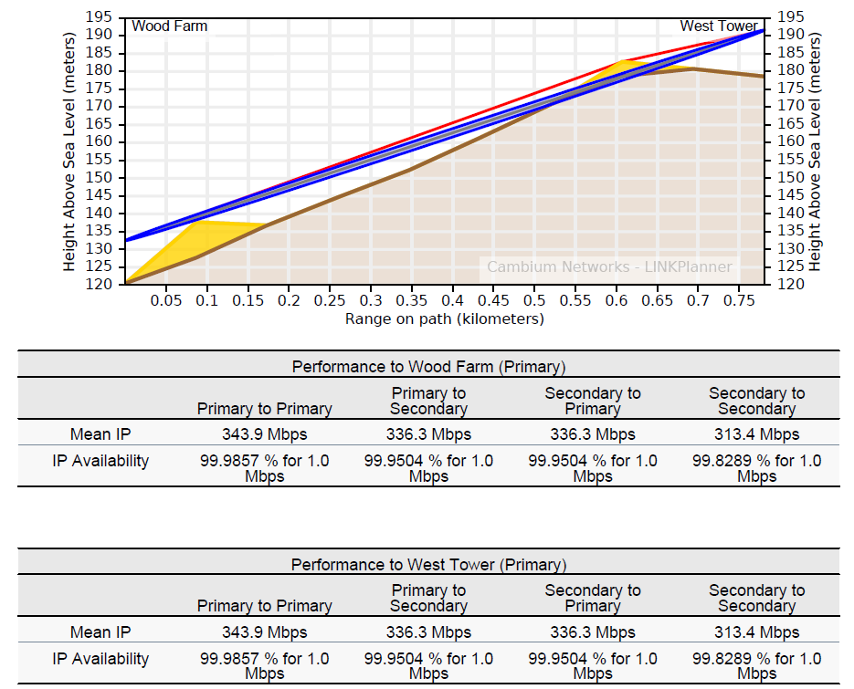

Hot Standby is available on PTP 700 and PTP 820 links, and it involves configuring two units at each end of the link to operate as primary and secondary (standby) units. For a more detailed understanding of 1+1 Hot Standby, see the appropriate product User Guide.
The link node gives access to the Link Description, Equipment Selection, Product Configuration and Bill of Materials aspects of the link configuration.
Select the required path for the protected link. In addition to the normal parameters as described in Link Description and Equipment, links operating Hot Standby have the following additional attribute displayed:
Antenna Configuration: There are up to 4 options which can be selected to match the possible configurations for Hot Standby when using an ODU Product or PTP 820.
Common Antenna - Symmetric Coupling
Common Antenna - Asymmetric Coupling - default setting
The primary and secondary parameters at each end can be configured as described in Configuration at Each End, by selecting the following paths:
Primary to Primary
Primary to Secondary
Secondary to Primary
Secondary to Secondary
Although the parameters can be configured through either the primary or secondary interface, some parameters are common to both configurations at the same end of the link. Any changes made to either primary or secondary configuration will automatically be reflected in the other configuration at that end of the link.
Antenna Type: If one of the common antenna protection options has been selected this value will be the same for both primary and secondary. If the redundant antennas or spatial diversity option have been selected then a different antenna can be chosen for primary and secondary. If using an FCC regulation Cat B, Cat B1 or Cat B2 antennas can be used as a receive only diverse antenna in locations where a Cat A primary antenna is required. In such locations these antennas must not be used for transmit, see PTP 820 Series User Guide or PTP 850 Series User Guide for further details on the correct way to commission the PTP 820 and PTP 850 product for use with these antennas.
Antenna Height: If one of the common antenna protection options has been selected this value will be the same for both primary and secondary. If the redundant antennas or spatial diversity option have been selected then a different antenna height can be chosen for primary and secondary.
Diversity Spacing: This field is only shown when the Antenna Configuration is set to Spatial Diversity and it shows the difference in height between the Primary and Secondary antennas. Improvement in availability will only occur when this value is greater than zero, see Setting Diversity.
Feeder Loss: This field will incorporate the coupler loss in addition to any waveguide loss. Any User Defined additional loss which has been included will be the same for both primary and secondary remote antennas for any of the common antenna protection options, but can be different for primary and secondary if the redundant antennas or spatial diversity option have been selected. The symmetric coupler will have the same loss for both primary and secondary, whereas the asymmetric coupler has a lower loss for the primary and higher loss for the secondary.
Maximum EIRP: The EIRP will often be different for the primary and secondary, in the majority of cases the primary will have the higher value. If the secondary has a higher value than the primary, a warning will be shown on the display, as this might violate the terms of the license.
Maximum Power: This field can be set independently for primary and secondary.
Tx Frequency: This value will always be the same for primary and secondary.
Interference: This value will always be the same for primary and secondary.
The Bill of Materials is displayed at the left corner of the link page and shows the full set of equipment required for both the primary and secondary units. If out-of-band management is required then additional items may be required to make up a full set of equipment, which can be selected via the New Extras icon, see Bill of Materials Optional Extras.
The performance summary information is shown separately for each path and can be accessed by selecting the appropriate path, for example Primary to Secondary, from the tabbed view. The required performance parameters can be set independently for each path and are defined in the usual way, see Performance Summary.
If the predicted performance of the primary to primary path is below requirements, then the main link node will be displayed in red. If the performance of any of the other paths is below requirements then the associated sub-path in the tabbed view will be shown in red, but will not affect the annotation of the link node, the map display or the link table . If a particular path is not considered relevant to the performance of the link, it can be “switched off” by setting the following:
A detailed report is produced, which details all four paths, on clicking one of the report buttons.
The proposal and installation reports are created for a given link, not path, in the usual way, see Creating Reports.
The detailed reports contain both installation and performance information for each of the path combinations, with the significant changes outlined in the following sections.
The throughput information for each end of the link and the link summary information is shown for each of the paths.

Proposal Report Performance Information for Protected (1+1) Link¶
For both sets of performance information the primary to primary notation refers to the left end to right end of the link, in this example Wood Farm to West Tower.
For the Performance to West Tower the information is shown for the performance received at West Tower when:
Primary to Primary - both Wood Farm and West Tower are set to primary.
Primary to Secondary - Wood Farm is set to primary and West Tower is receiving a signal on its secondary unit.
Secondary to Primary - Wood Farm is transmitting on its secondary unit, whilst West Tower is still receiving on its primary unit.
Secondary to Secondary - both Wood Farm and West Tower are using their secondary units
The initial sections of the report (link summary, path profile and link configuration) are shown for the primary to primary path. For PTP 820 it is given as a single report for each end, showing any difference in primary and secondary parameters as required. The BNC Target Voltage and Predicted Receive Power are given for both the primary and secondary units with the other end of the link operating on primary.
If the values are required to verify the secondary to secondary path, then the Predicted Receive Power can be estimated quite closely for the common antenna configuration. The BNC Target Voltage can be derived from the received signal level using the RSSI voltage table given in PTP 820 Series User Guide. Assuming that the same power level is used for both primary and secondary then the impact will be as follows:
Symmetric Couplers - no change in predicted receiver power
Asymmetric Couplers - the predicted receive power will drop by 5.4 dB compared with the secondary receive power level.
If the transmit powers are different for primary and secondary then the offset will have to be adjusted according to the difference. Equally if different antennas are used for primary and secondary the predicted receive power for the secondary to secondary path will be changed (with respect to the primary to primary path) by the sum of the difference in antenna gains at each end of the link.
For PTP 820 the performance information is given for all four paths, in a similar manner to the detailed proposal report.